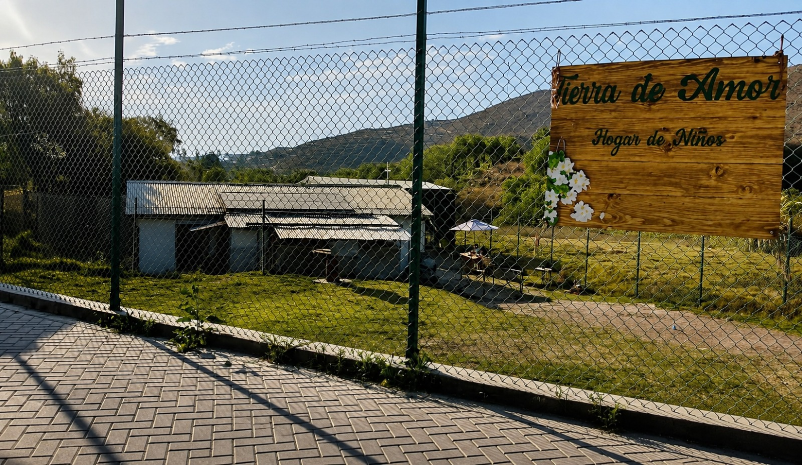
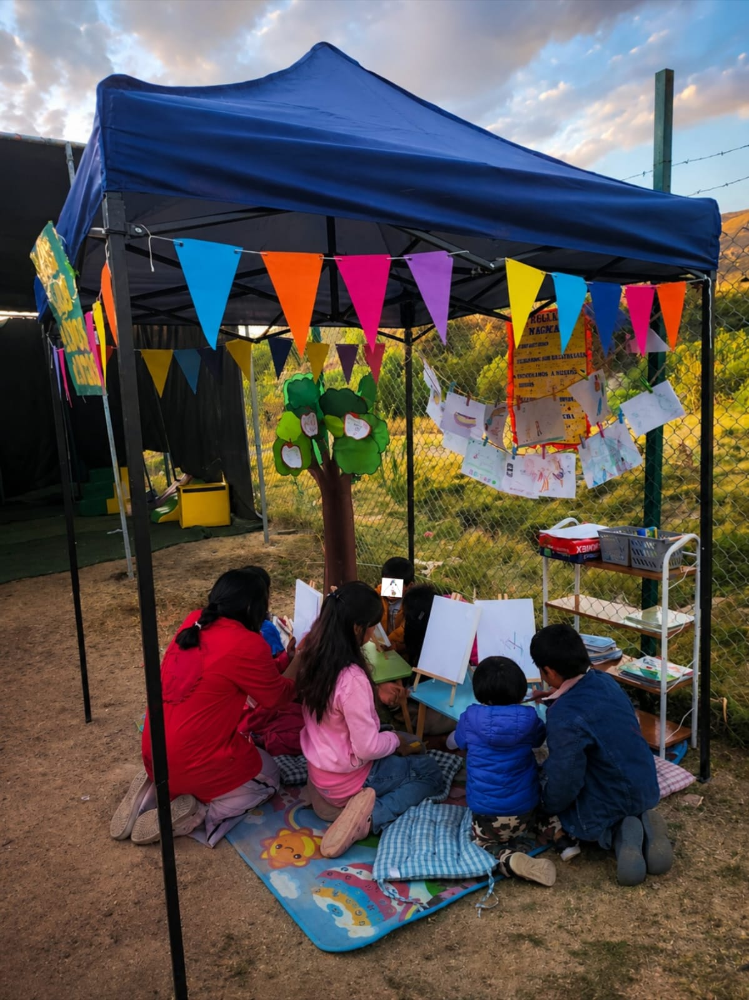
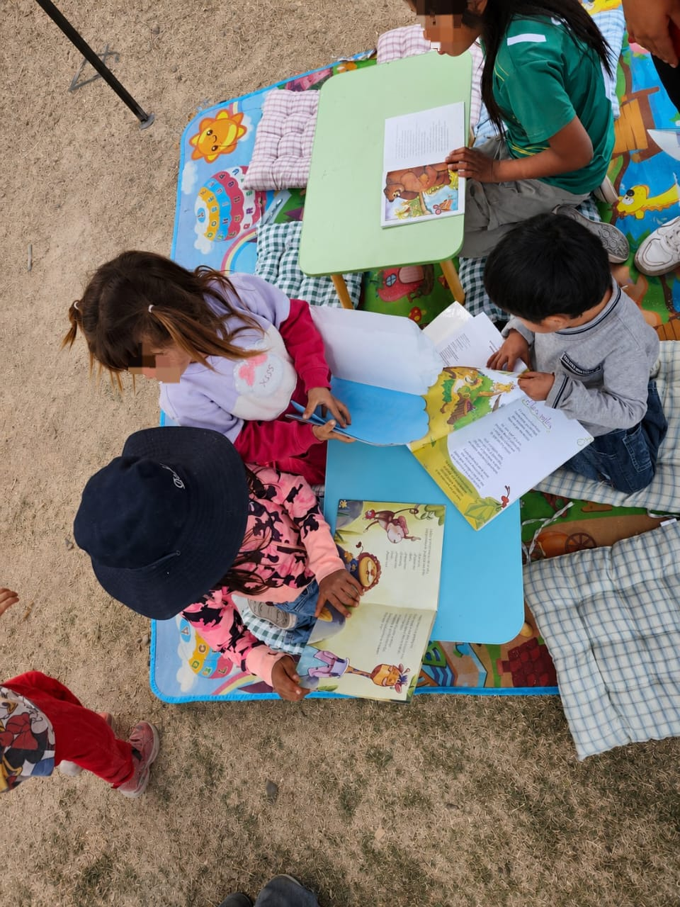

Alimentos
Víveres, leche, menestras, frutas, verduras, cereales, productos de limpieza alimentaria y alimentos nutritivos para menores.
Un hogar seguro para volver a empezar
En Yarabamba, Tierra de Amor acompaña a 10 niñas y niños pequeños que requieren cuidado, alimentación, contención emocional y un equipo profesional estable.
niñas y niños reciben cuidado diario
años aprox.
acompañamiento
Espacio para una fotografía institucional autorizada
Nuestra labor
La Casa Hogar de Niños Tierra de Amor, ubicada en Yarabamba, brinda acogida a niñas y niños provenientes de contextos familiares complejos, riesgo social, abandono, violencia o explotación. Su trabajo busca ofrecer un entorno seguro, afectivo y ordenado para que cada menor pueda recuperarse, desarrollarse y sentirse protegido.
La fundadora y directora, Kathleen O'Brien Cuadros, lidera este proyecto con apoyo solidario de personas cercanas. Actualmente, el hogar necesita ampliar su red de donantes y aliados para cubrir gastos básicos y profesionales.
Necesidades urgentes
Las prioridades actuales son alimentación, pañales, útiles, mantenimiento y pago del equipo profesional que acompaña a los niños.
Víveres, leche, menestras, frutas, verduras, cereales, productos de limpieza alimentaria y alimentos nutritivos para menores.
Pañales para el niño de 1 año y para pequeños que aún requieren apoyo por procesos emocionales y de desarrollo.
Apoyo para psicología, cuidado diario y personal especializado que garantice atención segura y continua.
Mantenimiento, agua por cisterna, energía, limpieza, útiles, ropa, higiene personal y mejoras del espacio.
Situación actual
Tierra de Amor inició la acogida de niños en octubre de 2025. El proyecto se formalizó para operar como casa hogar, pero hoy enfrenta una etapa crítica: requiere sostener alimentación, pañales, servicios básicos, mantenimiento y el equipo profesional necesario para cuidar adecuadamente a los menores.
Dona con confianza
Cada contribución ayuda a cubrir necesidades esenciales del hogar y a mantener un espacio seguro para los niños. También puedes apoyar con donaciones en especie o articulando alianzas institucionales.
Antes de publicar, confirma que los datos bancarios estén vigentes.



Transparencia
Publicar un resumen mensual de ingresos, gastos y compras realizadas.
Actualizar semanalmente los productos más urgentes: alimentos, pañales, higiene o mantenimiento.
Registrar empresas, organizaciones o voluntarios que apoyen de manera recurrente.
Contacto
Para coordinar donaciones, visitas responsables, alianzas o apoyo profesional, comunícate por WhatsApp o revisa las redes sociales oficiales.